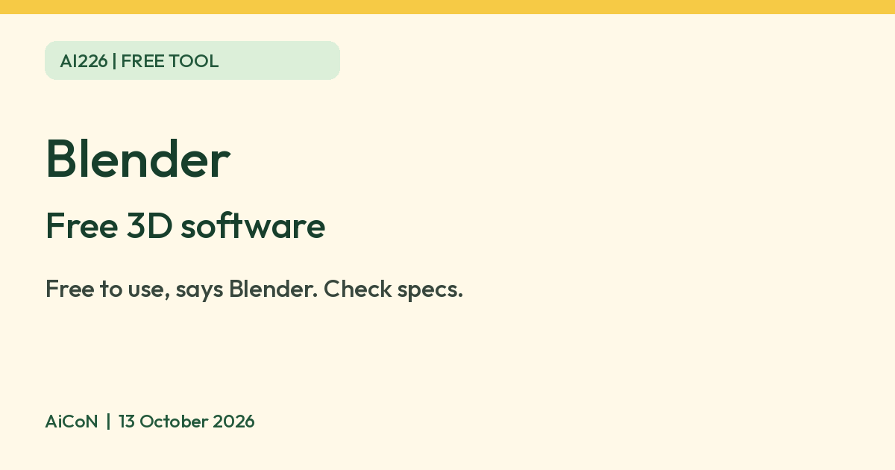

Blender: free 3D software, what it needs and what it costs
Blender says it is free software, free to use for any purpose, with no registration needed. It is heavy 3D software, so check what your computer needs first.

Official Blender logo
What it is
Blender is 3D software from the Blender Foundation. People use it to model, animate and render 3D scenes and video. It is not an AI tool. We included it because it is a free tool from an official source. Its download page lists version 5.2.2 LTS for Windows, Windows on Arm, macOS (Apple Silicon) and Linux.
Is it free?
Yes. Blender's licence page says: "Free to Use. Free to Change. Free to Share. Free to Sell Your Work." It says Blender is released under the GNU General Public License and you are free to use it for any purpose. Its privacy page says the software is free to download and use without registration, and that no internet access is needed to use it. We found no price or paid tier for the software on those pages.
What your computer needs
- On Windows and Linux, Blender's requirements page lists a minimum of 8 GB RAM, a 4-core CPU and a GPU with 2 GB of video memory. It recommends 32 GB RAM, 8 cores and 8 GB of video memory.
- On Mac, the minimum is Apple Silicon, macOS 13 (Ventura) or newer, and 8 GB RAM. Blender 5.0 and later do not support Intel Macs. Windows installers are 348 MB (Windows) and 227 MB (Windows on Arm) on the download page.
- AiCoN advice: 3D work is heavy. An older or low-end laptop may struggle, so check the requirements first.
Check the full CPU, graphics and driver rules too: Windows/Linux minimums include SSE4.2, OpenGL 4.3 and Vulkan 1.3 support. RAM and VRAM amounts alone do not guarantee compatibility.
Who it suits
- Anyone who wants to try 3D modelling or animation without paying for software.
- It is a full 3D program, not a simple app. We did not test how hard it is to learn, and did not review Blender's tutorials.
- We found no age limit and no India-specific statement on the pages we read. The download is a public file on blender.org.
Privacy and data
- Blender's privacy page says no third party will track you on blender.org and there are no third-party ads there. It separately warns that embedded videos and social-share buttons can let their providers track your interaction.
- It says blender.org uses first-party cookies, including to collect anonymous log and visitor information. Accounts (Blender ID) are only needed for services like bug reports, not for using the software.
- You can download Blender from blender.org or from third-party sites, according to Blender. AiCoN advice: use blender.org.
Frequently asked questions
Is Blender free?
Yes. Blender says it is free software under the GNU GPL, free to use for any purpose.
Do I need an account or internet?
Blender says the software can be downloaded and used without registration, and needs no internet access to use.
Is it AI?
No. It is a free 3D tool. We included it because it is a free tool from an official source.
How to start
- Compare your operating system, CPU, memory and graphics support with the official requirements. Minimum memory alone does not guarantee a supported computer.
- Open blender.org/download and choose the official stable build for your platform. Avoid early-access builds for important work; Blender warns they can be unstable.
- Install or use the portable option supported by your platform. Start with a small scene and save your work regularly.
- Keep add-ons disabled unless you need and trust them. The licence page says internet-using add-ons ask for permission; Blender itself can work offline without registration.
What changed since this post?
Official download, licence, requirements, privacy and logo pages rechecked on 13 October 2026. The download page lists 5.2.2 LTS. Free use and no registration remain stated. Hardware requirements differ by platform, especially Apple Silicon on Mac. India-specific availability was not verified. No installation, rendering or performance test was run by AiCoN; low-end-computer cautions are advice, not a benchmark.
Sources: Blender licence, Blender download, Blender requirements, Blender privacy policy, Official logo and usage rules. Checked 13 October 2026.